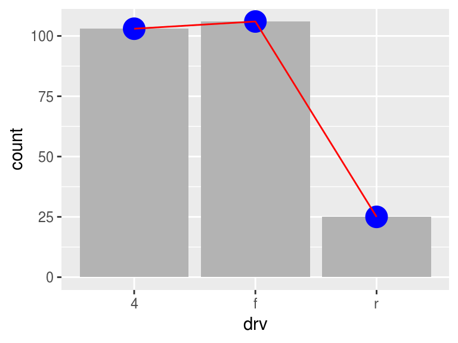
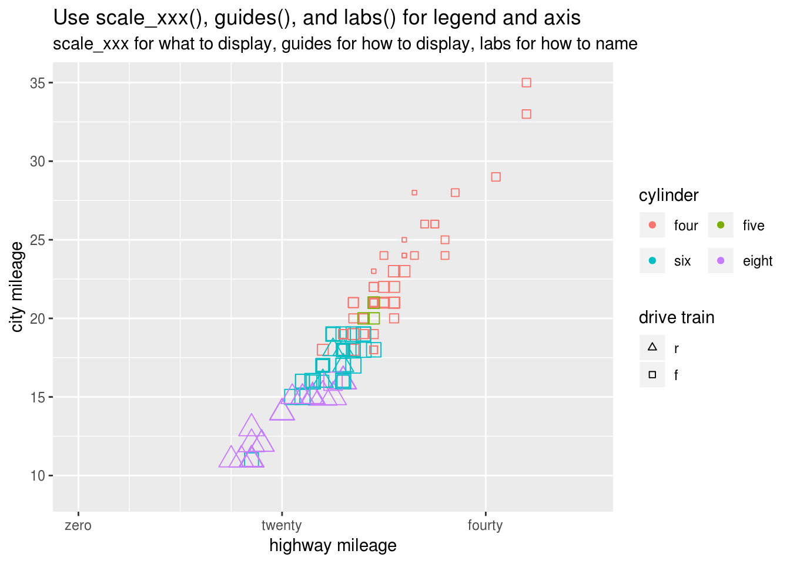
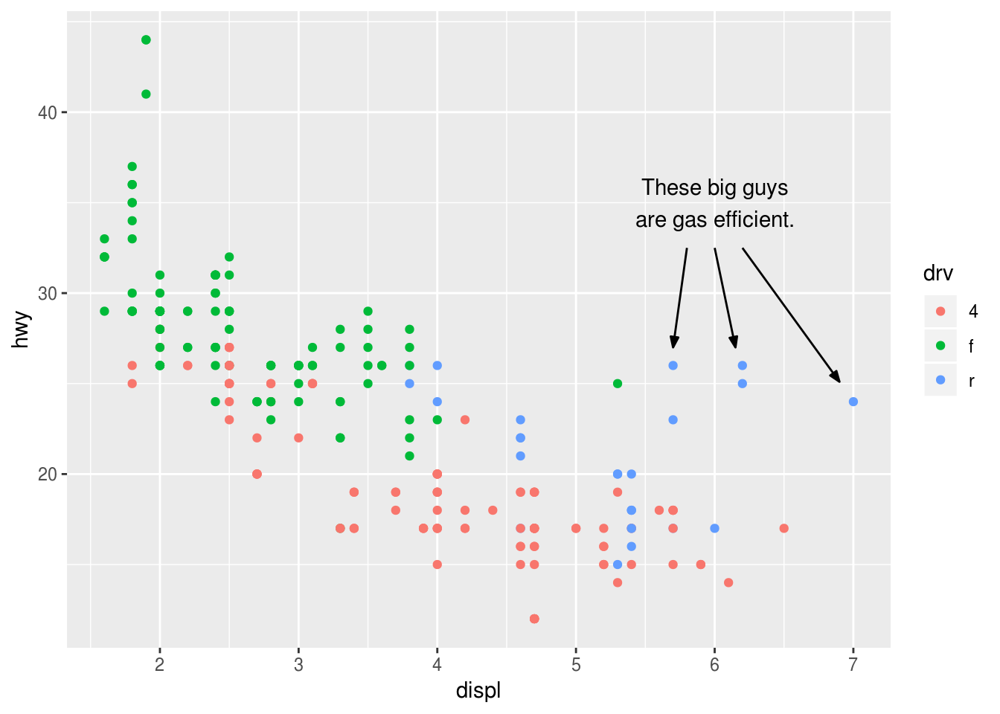
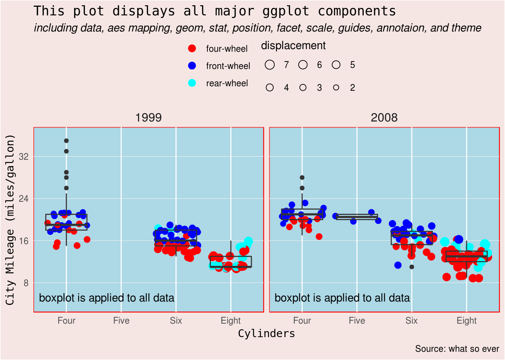

My uniform way of using ggplot2
Just finished reading Hadley Wickham’s ggplot2 book, (second eition). Before that I have been using ggplot2 for a couple of years, mainly learned by reading documentation and searching for help online.
The ggplot2 package is a powerful and comprehensive tool for generating static plots, but I also feel it is a little bit too flexible; the same plot can be made with many different ways. This fexibility provides obvious convenience but also introduces a lot of confusion and extra burden of memorization. Being flexible is not a good feature for a lazy user like me. I just can not memorize all these different methods. What I want is an appoach that gets the job done, is easy to apply to many tasks, and does not have much to memorize. I need a uniform way to use ggplot2.
Here I discuss how I like to make ggplot2 plots. It is my personal preference. Every one can find their best way. I will give the reason why I am doing so.
What to be included in ggplot()
Every ggplot2 plotting starts with the function ggplot(). Typically data and aes() are included as arguments. The aes() can include x, y and more aesthetic mapping such as color, shape, fill, …, as in the code below,
ggplot(data = mpg, aes(x = displ, y = cty, color = drv, shape = year, fill = cyl))
# or to simplify
ggplot((mpg, aes(displ, cty, color = drv, shape = year, fill = cyl)))My preference for this part is to include as fewer arguments as possible, even without any argument. All these arguments are inherited by all plotting layers by default. If you want them to be used in all layers, then that is good; you save a few keystrokes. But if it is not what you want, it is where troubles hide. For example, if your want to a linear fit to all data points but has color in aesthetic mapping, the fit is applied to each color. You’d better move the color out of ggplot().
library(ggplot2)
ggplot(mpg, aes(cty, hwy, color = drv)) +
geom_point() +
stat_smooth(method = "lm")
Which to choose, geom_xxx() or stat_xxx()
These two functions caused a lot of headache to me. Both geom_xxx() and stat_xxx() plot layers. Many geoms have equivalent stats, such as geom_smooth() and stat_smooth(), geom_bar() and stat_count, and geom_boxplot() and stat_boxplot(). Even geom_point() has an equivalent stat_identity(). So which one to use?
I like to use geom_xxx() for layers that directly plot the original data and stat_xxx() for layers that plot statistical transformation of the original data. The former includes geom_point(), geom_line(), and geom_col() etc. The latter includes stat_smooth(), stat_count, and stat_boxplot() etc. This a natural choice to me as I pay more attention to data; whenever statistical transformed data are used, I want to use it explicitly with function starting with stat. Using stat_xxx() has additional benefit: we can choose the right geom as desired without losing sense of what data are being displayed. In the following code, the counts of drv are displayed as bar, point and line. No matter what geom you choose, the stat_count always explicitly tells you that you are plotting the count.
ggplot(mpg, aes(drv)) +
stat_count(geom = "bar", fill = "grey70") +
stat_count(geom = "point", size = 6, color = "blue") +
stat_count(geom = "line", aes(group = 1), color = "red")
A few words about bar plot. Above count of one categorical variable are often plotted with geom_bar(). The awkward thing is that geom_bar(stat = "identity") also make bar plot when two variables aes(x, y) are provided. To solve this issue, ggplot2 version 2.2.0 introduced geom_col(aes(x, y)) to take care bar plot from two variables. With stat_count() and geom_col(), geom_bar() are ready to retire.
How to organize axis and legend
Almost all components regarding axis and legend can be specified in scale_xxx_xxx() funtions. You can get the job done by only using them. The code may be too busy though. Several help functions do part of scale_xxx_xxx()’s job and make the code succint, such as xlab() and ylim(). But too many help functions also make code less structured.
I like two help functions: labs() sets titles of all axis and lengends and guides() arranges multiple legends. Together with scale_xxx_xxx(), the three take care axis and legend in a logical way:
scale_xxx_xxx()determines what to show. They are used to set limits, breaks and labels of each aesthetics, which are the real data to show.guides()determines how to display. It is a best practice to arrange each legend by considering all others the same time.labs()determines how to call them. It names axis and legend in one place by treating all axis and legend as a whole, which helps to name them in the same style.
ggplot(mpg, aes(hwy, cty, color = factor(cyl), shape = drv)) +
geom_point(aes(size = displ)) +
# what to display
scale_x_continuous(limits = c(0, 50),
breaks = c(0, 20, 40),
labels = c("zero", "twenty", "fourty"),
minor_breaks = c(5, 10, 15)) +
scale_color_discrete(breaks = c(4, 5, 6, 8),
labels = c("four", "five", "six", "eight")) + # asign colors by default
scale_shape_manual(limits = c("f", "r"), # manually select shape
values = c(f = 0, r = 2)) +
# how to display
guides(
size = "none", # hide size
color = guide_legend(direction = "horizontal",
title.position = "top",
nrow = 2,
byrow = TRUE, # arrange row by row, default is by column
order = 1), # first legend to show
shape = guide_legend(direction = "vertical",
reverse = TRUE) # reverse order of legend keys
) +
# what's your name
labs(title = "Use scale_xxx(), guides(), and labs() for legend and axis",
subtitle = "scale_xxx for what to display, guides for how to display, labs for how to name",
x = "highway mileage",
y = "city mileage",
color = "cylinder",
shape = "drive train",
size = "haha you cannot see me") 
Let’s do a quick annotation with annotate()
Annotation with annotate() is handy when you simply want to draw something using vectors. It can draw text, segment, rect, and pretty much everything geom_xxx() offers. Do not get confused with geom_text() and geom_segment(), and geom_rect, …, which use dataframes. Reserve annotate() for drawing simple things manually.
ggplot(mpg, aes(displ, hwy, color = drv)) +
geom_point() +
annotate("text", x = 6, y = 35, label = "These big guys\nare gas efficient.") +
annotate("segment", x = c(5.8, 6, 6.2), y = 32.5,
xend = c(5.7, 6.15, 6.9), yend = c(27, 27, 25.1),
arrow = arrow(angle = 20, length = unit(2, "mm"), type = "closed"))
Finally a comprehensive example
In addition to the confusing parts discussed above, a normal ggplot2 plot may contains position, facet, and of course theme(). I will conclude this post with an example that covers all major components of a ggplot2 plot. This is the uniform way I am using ggplot2.
ggplot(mpg, aes(factor(cyl), cty)) +
# leave color and size in geom_point() so that stat_boxplot works on all data
geom_point(aes(color = drv, size = displ), position = "jitter") +
stat_boxplot(fill = NA) +
facet_wrap(~year) +
# === take care axis and legend ===
# determine what values and labels to display
scale_x_discrete(breaks = c(4, 5, 6, 8),
labels = c("Four", "Five", "Six", "Eight")) +
scale_y_continuous(limits = c(4, 36),
breaks = 1:4 * 8) +
scale_color_manual(breaks = c("4", "f", "r"),
values = c("4" = "red", "f" = "blue", "r" = "cyan"),
labels = c("four-wheel", "front-wheel", "rear-wheel")) +
scale_size_area(limits = c(2, 7),
max_size = 4) +
# make arrangement for each legend
guides(
size = guide_legend(
title.position = "top",
nrow = 2,
byrow = TRUE,
override.aes = list(shape = 1),
reverse = TRUE
),
color = guide_legend(
order = 1,
nrow = 3,
override.aes = list(size = 3)
)
) +
# using labs() for all of the titles and labels in one place
labs(title = "This plot displays all major ggplot components",
subtitle = "including data, aes mapping, geom, stat, position, facet, scale, guides, annotaion, and theme",
caption = "Source: what so ever",
x = "Cylinders",
y = "City Mileage (miles/gallon)",
color = NULL,
size = "displacement") +
# === provide extra information ===
# annotate extra geoms mannually. Play with geom_text() if want to label in
# a specific facet panel
annotate("text", x = 0.5, y = 6, label = "boxplot is applied to all data",
hjust = 0, vjust = 1) +
# === use theme() to make it beautiful ===
theme(plot.background = element_rect(fill = "#F5E6E3"),
plot.title = element_text(family = "monospace"),
plot.subtitle = element_text(face = "italic"),
panel.background = element_rect(fill = "lightblue", color = "red"),
panel.grid.major.y = element_line(color = "grey95", size = 0.2),
panel.grid.minor.y = element_blank(),
axis.ticks = element_blank(),
axis.title = element_text(family = "monospace"),
legend.position = "top",
legend.key = element_blank(),
legend.margin = margin(0, 0, 0, 0),
legend.background = element_blank(),
strip.background = element_blank(),
strip.text = element_text(size = 12))